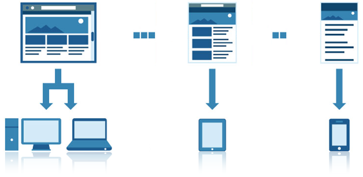
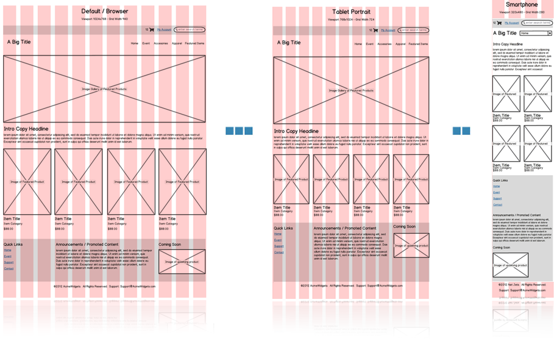
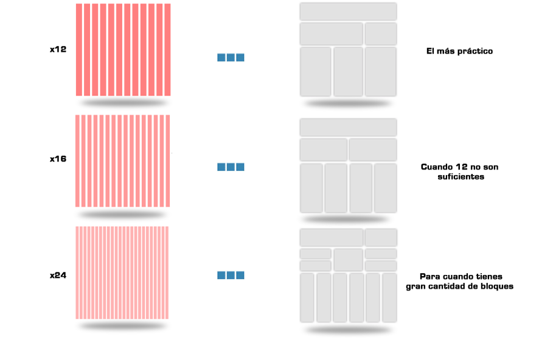
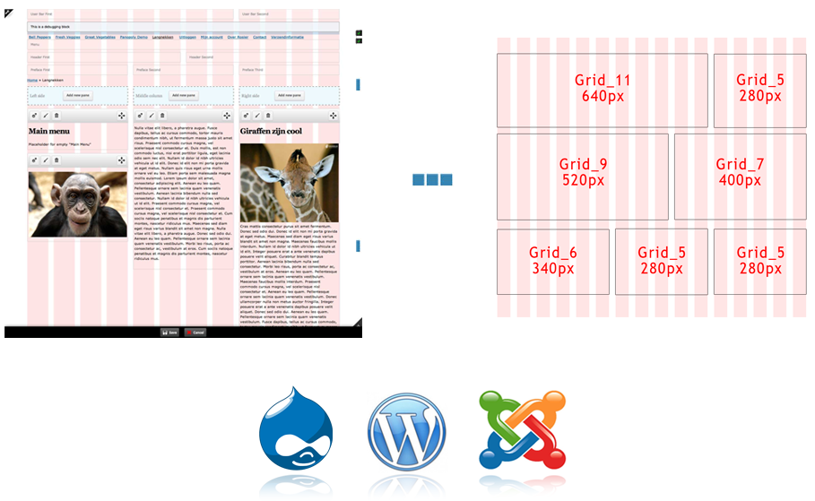
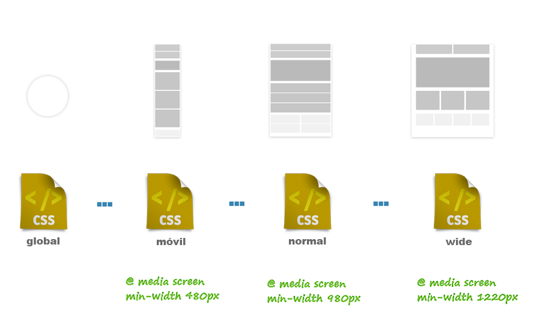
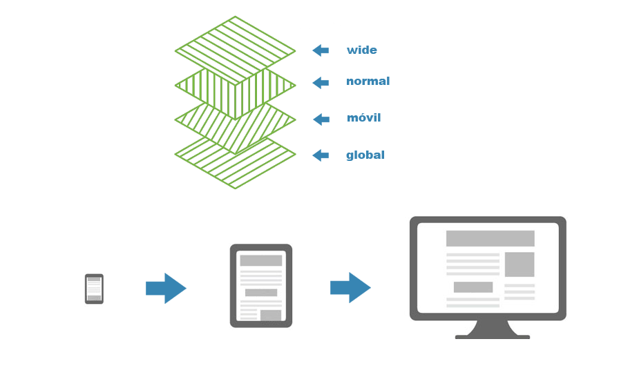

Curso de CSS3
{ El amigable mundo de la hojas de estilo }
Diseño web responsive
Diseño web responsive
Son una serie de practicas aplicadas al diseño web que le permiten al contenido de un sitio web adaptarse a diferentes resoluciones en diferentes dispositivos.
Diseño web responsive
en español, muchos sinónimos:
- Diseño adaptable
- Diseño adaptativo
- Diseño responsivo
- Diseño multidispositivo
- Diseño fluido
- Diseño líquido
Diseño web responsive
Beneficios:
- Reducción de costos de producción.
- Eficiencia en el mantenimiento.
- Mejora la usabilidad.
- Impacto en el visitante.
Diseño web responsive
¿Cómo lograrlo?
- Etiqueta meta Viewport
- Media Querys
- Fluid grids
- Imágenes y texto flexibles
Etiqueta viewport
Sirve para definir qué área de pantalla está disponible al renderizar un documento, nivel de escala que puede realizar el usuario y si el navegador debe mostrar algún zoom inicial.
Etiqueta viewport
- Width: anchura virtual (emulada) de la pantalla o anchura del viewport.
- Height: altura virtual de la pantalla o anchura del viewport.
- Initial-scale: la escala inicial del documento.
Etiqueta viewport
- Minimum-scale: la escala mínima que se puede poner en el documento.
- Maximum-scale: la escala máxima configurable en el documento.
- User-scalable: si se permite o no al usuario hacer zoom.
Media Querys
Permite la representación de contenido para adaptarse a condiciones como la resolución de pantalla
Añadido en CSS3, dejan que el contenido se adapte a un rango especifico sin tener que cambiar el contenido.
Media Querys
Consisten de un media type y una o mas expresiones, implicando características del medio, la cual se resuelve como verdadera o falsa.
El resultado de la consulta es verdadera si el tipo de medio especificado en el media query concuerda con el tipo de dispositivo que está siendo mostrado.
Media Querys
Pueden agregarse dentro de la(s) hojas de estilo vinculadas al HTML, con @import:
@media screen and (max-width: 320px) {
/* Aquí van las reglas CSS necesarias */
}
Media Querys
También pueden agregarse en hojas de estilo externas, en este caso con la etiqueta LINK:
Sistema de Grids
Premiten mantener el orden y usabilidad en el sitio, tomando en cuenta la resolución a la cual se visualizará.
Sistema de Grids
¿Qué grid elegir?
Sistema de Grids
Temas responsivos
Imágenes, texto y elementos Fluidos
El diseño fluido está pensado en términos de proporciones(%) en vez de valores fijos.
Al variar la resolución los elementos guardandaran la proporción entre ellos.

Imágenes, texto y elementos Fluidos
Lo mismo aplica para elementos como texto, por ejemplo:
Si el tamaño general es del 100%, que equivale a 16px, y tenemos un título de 22px, su nuevo tamaño será de 22/16 = 1.375em
Imágenes, texto y elementos Fluidos
Con las imagenes y videos aplica algo similar, por ejemplo:
img, video { max-width:100%; }
Imágenes, texto y elementos Fluidos
Ventajas:
Optimiza la web para resoluciones inferiores a los 960px
Desventajas:
Proporciones en resoluciones mayores 1920px
CSS y Media Queries
Mobile First
¿Quién hace la magia? =los Media Quieries
CSS y Media Queries
¿Por qué Mobile First?
Comencemos con la práctica...